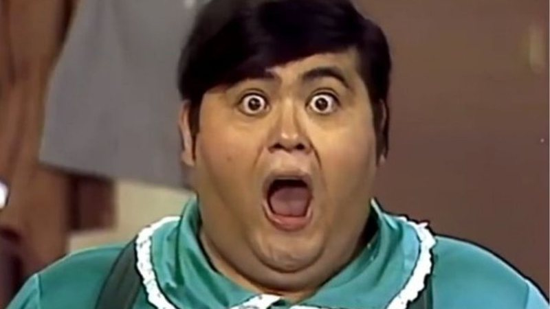

Nhonho (Édgar Vivar)
Nhonho é o único filho do Seu Barriga. Mimado, ele costuma ter os melhores brinquedos da turma. Ele é bem guloso e nunca está disposto a dividir seus sanduíches com o Chaves. Mas Nhonho também é um dos mais inteligentes da turma, sempre se destacando nas aulas do Professor Girafales.
Sua primeira aparição foi em 1974, no primeiro episódio na escolinha. O personagem passou a fazer parte do elenco com maior frequência nas temporadas finais.